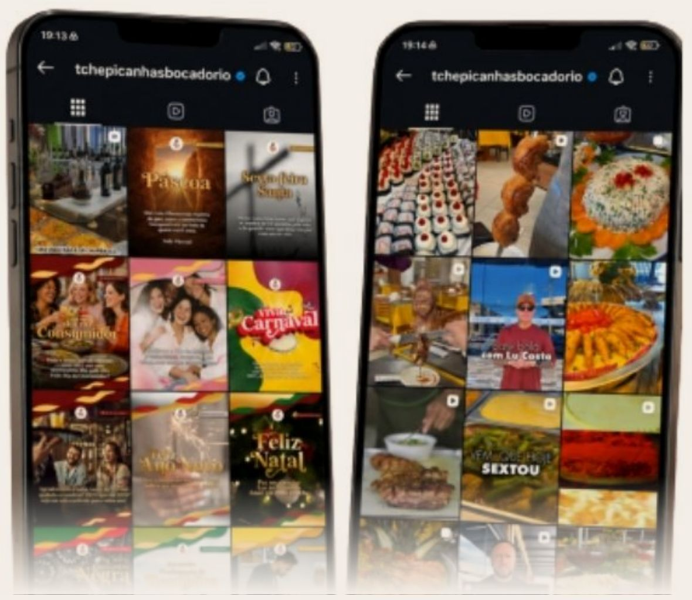
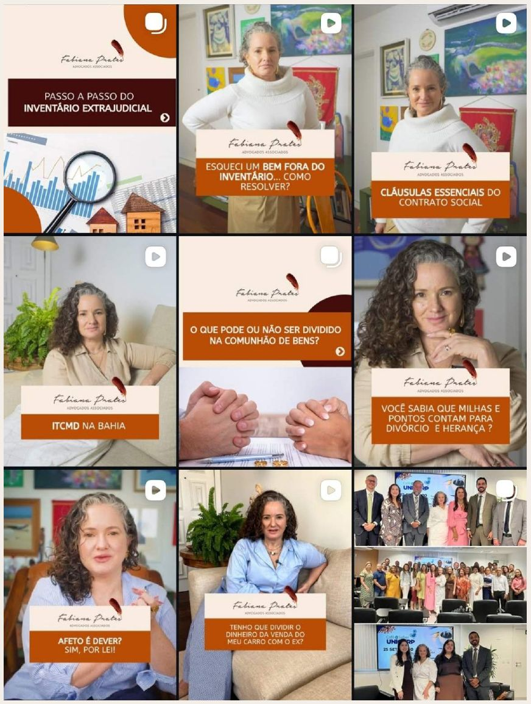
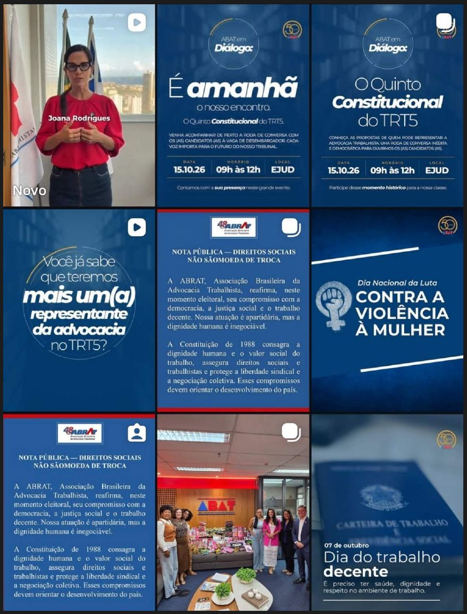
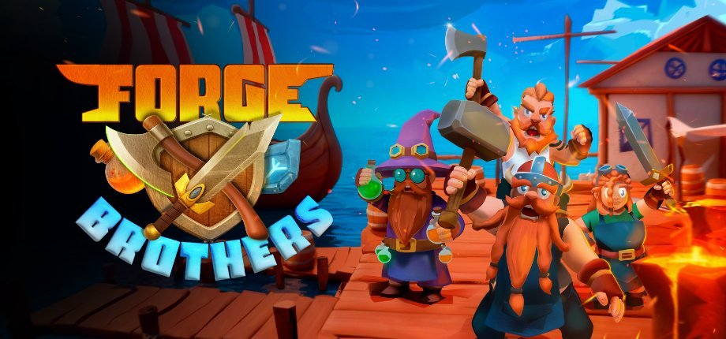

@fabianapratesadvogadosEscritório de advocacia18,3 mil
@abat_advogadosAdvocacia trabalhista8.653
@fabianapratesoficialAdvogada e palestrante2.280
@anasalles.alemdamateriaEspiritualidade1.325
Case 01 · Gastronomia
Grupo Tchê Picanhas
Reposicionamos uma tradição gastronômica de mais de trinta anos para as dinâmicas atuais de consumo digital, transformando o tempo de mercado em um ativo narrativo de valor, e não em um sinal de envelhecimento.
30+Anos de tradição
46,9 milSeguidores hoje

AntesDepois
Case 02 · Cultura
Festival Panorama Coisa de Cinema
Coordenamos o marketing da expansão territorial do evento, de Salvador para o Rio de Janeiro. O desafio de adaptar a linguagem para um público novo sem diluir a essência do festival resultou em uma entrada bem-sucedida em um novo território.
SSA → RJExpansão
23,8 milSeguidores hoje
Conexão Rio · BahiaO Panorama fez as malas
Case 03 · Advocacia
Fabiana Prates Advogados
Assumimos uma conta estagnada e reconstruímos a base com uma estratégia de conteúdo focada em autoridade jurídica e adequação de linguagem.
SEGUIDORES3 mil → 18,3 mil
Média de 1.500 novas contas por mês

Case 04 · Institucional
Associação Baiana da Advocacia Trabalhista
Marketing corporativo alinhado às pautas relevantes no contexto da associação e à divulgação das ações promovidas pela instituição, em contato direto com a comunidade trabalhista.
50 anosDe associação
8.653Seguidores hoje

02 — O mercado
Benchmark inicial· Nicho Indie Games
A Steam ficou mais exigente com indies. O caminho que sobra é gerar volume próprio de interesse.
20%das wishlists viram compra na primeira semana. É a mediana na Steam.
~100 milwishlists estimadas para entrar na lista Popular Upcoming depois da mudança de junho de 2026. Antes, cerca de 7 mil bastavam.
8–30 milwishlists estimadas para aparecer nos calendários personalizados da Steam, que hoje levam mais tráfego a indies.
61.749wishlists que o indie Mortal Rite acumulou a partir de 126 milhões de visualizações orgânicas no TikTok.
Fontes: GameDiscoverCo, “Steam: the new wishlists to first week sales expectations” · GamesRadar+, 1 jul. 2026 · Game Developer, 22 ago. 2022 (caso Mortal Rite).
Alto · Produtora AudiovisualPortfólio e proposta · 03 / 15
03 — A estratégia
O funil
Todo o conteúdo tem um destino só.
Alto · Produtora AudiovisualPortfólio e proposta · 04 / 15
03 — A estratégia
A Estratégia
Toda a estratégia é baseada nos conceitos de diversificação de ângulos e formatos.
Os algoritmos das redes, como o da Meta, valorizam a diversificação criativa: cada tema novo e cada forma nova de apresentar o jogo chegam a uma fatia diferente de público. Por isso, em vez de repetir o mesmo vídeo, variamos os ângulos (o tema de cada conteúdo) e os formatos (a forma de apresentar). Mais combinações significam mais públicos alcançados e mais dados sobre o que funciona.
Exemplos:
01GameplayO QUE ÉRecortes das partidas mais caóticas e engraçadas.POR QUE FUNCIONAMostra a dinâmica do jogo sem tentar vender ou explicar demais.
02BastidoresO QUE ÉO Léo e a equipe contando por que cada feature existe, modelagem 3D e rotina de desenvolvimento.POR QUE FUNCIONACria vínculo com quem faz o jogo.
03CalloutsO QUE ÉGanchos com referências que o público já conhece: gêneros, jogos e memes do momento.POR QUE FUNCIONAPrende a atenção nos primeiros segundos.
04CriadoresO QUE ÉClipes de criadores de conteúdo jogando o Forge Brothers.POR QUE FUNCIONAProva social e alcance em novas bolhas.
Alto · Produtora AudiovisualPortfólio e proposta · 05 / 15
03 — A estratégia
Quem já escalou assim
Três casos que usaram diversificação criativa e volume de conteúdo para crescer. Clique em cada capa.
Alto · Produtora AudiovisualPortfólio e proposta · 06 / 15
04 — Escopo de atuação
O que a Alto entrega
01Estratégia orgânica
Página da Steam com foco em conversão de wishlists
Estratégia de testes de formato e ângulos
Leitura semanal de desempenho
02Produção criativa
Clipes de gameplay para TikTok, Shorts e Reels, a depender do plano
Criação, organização e controle das redes sociais do projeto
03Idiomas
Português (PT-BR) e inglês desde o início
Cada idioma tem a sua conta, então o projeto precisa de um segundo perfil
Alto · Produtora AudiovisualPortfólio e proposta · 07 / 15
04 — Escopo de atuação
O que fica fora do escopo
Tráfego pago e anúnciosEm jogos indie de PC, raramente converte.
Gestão de comunidades (Discord)Fica com a equipe do jogo. A Alto usa as comunidades como canal e pauta.
Marketing institucional e LinkedInFora do foco do lançamento.
Representação presencial em eventosA equipe do jogo segue à frente dos eventos.
Imagens do jogo geradas por IADecisão do cliente: nenhuma imagem do jogo é gerada com inteligência artificial.
Alto · Produtora AudiovisualPortfólio e proposta · 08 / 15
05 — Cronograma
15 a 20 dias até começar a produção
Uma semana para pesquisa e esboço da página, outra para produção e aprovação. Do dia 15 ao 20, a produção entra em ritmo normal.
Dia 1–7Pesquisa e setup
Pesquisa, setup e onboarding geral: estudo do jogo, acessos e as duas contas, PT-BR e inglês. Esboço da página de wishlist da Steam no fim da semana.
Dia 8–14Aprovação
Produção da página da Steam e dos primeiros conteúdos, e aprovação do cronograma e da estratégia.
Dia 15–20Começa a produção
A produção entra em ritmo normal e segue as etapas do próximo slide até o lançamento.
Alto · Produtora AudiovisualPortfólio e proposta · 09 / 15
05 — Cronograma
Do dia 15 ao lançamento
Contado a partir do início da produção. Nada vai ao ar antes de a página da Steam existir, para o público ter onde cair.
Mês 1Gaveta de conteúdo
Primeiros conteúdos produzidos e postados nas redes sociais definidas, com a página da Steam no ar.
Mês 2Primeiros resultados
Primeiro breakdown realizado e produção da nova leva de criativos a partir dos resultados do primeiro mês.
Mês 3+Escala
Mais volume nos ângulos que funcionam e primeiros criadores, rumo a 5.000 wishlists.
DemoLançamento da demo
Pico de conteúdo e criadores jogando a demo.
14 diasReta final
Contagem regressiva com criadores, imprensa e comunidades até o lançamento, em abril de 2027.
Alto · Produtora AudiovisualPortfólio e proposta · 10 / 17
06 — Metas e projeções
Wishlists para bater a meta
Com base na conversão de referência de ~20% entre wishlist e compra na primeira semana.
Marco pré-demoMeta de referência5.000
Break-even12.000 cópias~60.000
Meta do cliente15 a 30 mil cópias75–150 mil
Valores em wishlists, exceto onde indicado. Meta do cliente em cópias vendidas no lançamento, convertida em wishlists a ~20%.
META DO CLIENTE NO LANÇAMENTO
O conteúdo começa cedo e mantém volume até abril para chegar lá.
15 a 30 mil cópias
Alto · Produtora AudiovisualPortfólio e proposta · 11 / 17
07 — Investimento
Planos
PLANO
Standard
R$4.500/mês
Página da Steam com foco em conversão de wishlists
Estratégia de testes de formato e ângulos
De 12 a 17 vídeos por mês
Canal: Instagram
Criação, organização e controle das redes sociais
Português (PT-BR) e inglês, cada idioma em uma conta própria
Leitura semanal de desempenho
RecomendadoPLANO
Advanced
R$6.800/mês
Tudo do plano Standard
De 20 a 28 vídeos por mês
Canais: Instagram, YouTube e TikTok
Mapeamento de criadores e veículos
Apoio na abordagem e negociação com criadores
Contato com a imprensa especializada
Busca e indicação de ilustrador no estilo do jogo para a arte da página da Steam
Alto · Produtora AudiovisualPortfólio e proposta · 10 / 15
07 — Investimento
Plano Performance
PLANO
Performance
R$5.400/mês + 5%
Tudo do plano Advanced
Acesso aos relatórios de vendas da Steam
Links de rastreio para medir a origem das wishlists
01O fixo é R$ 1.400 menor que o do Advanced, com o mesmo escopo.
02A parte variável só existe depois que o jogo passar do break-even, estimado em 12.000 cópias.
03A Alto recebe 5% da receita líquida (impostos e taxa da Steam já descontados) das cópias acima dessa marca, nos primeiros 90 dias de venda.
EXEMPLO ILUSTRATIVO
20.000 cópias a R$ 30 líquidos: as 8.000 acima do break-even somam R$ 240.000, e 5% disso é a comissão.
R$ 12.000
Alto · Produtora AudiovisualPortfólio e proposta · 13 / 18
07 — Investimento
Breakdown do ciclo de testes
É por isso que o número de vídeos é uma faixa: para o volume acompanhar o resultado.
01Definimos os ângulos (a abordagem de cada conteúdo) e os formatos (o estilo de cada vídeo) e passamos essa estratégia para você.
02Rodamos os testes com uma meta de visualização e engajamento combinada com você.
03A avaliação é semanal. Se a meta não vier, insistimos mais uma semana. Passadas duas semanas sem resultado, trocamos o formato ou o ângulo.
04Quando um teste funciona, aumentamos o volume do que está dando certo.
NA PRÁTICA
Mais resultado, mais vídeos
O valor do plano é fixo. Por isso o número de vídeos é uma faixa: quando um formato funciona, produzimos mais dele, sem custo adicional.
Alto · Produtora AudiovisualPortfólio e proposta · 11 / 15
07 — Investimento
Os 14 dias que decidem
Nas duas semanas antes do lançamento, todo o interesse acumulado precisa aparecer de uma vez.
01Conteúdo de contagem regressiva já produzido e aprovado.
02Calendário de criadores e imprensa fechado com antecedência.
03Comunidades do Discord mobilizadas para o dia do lançamento.

Reta final: 1 vídeo por dia, equipe dedicada e sem limite mensal de vídeos
STANDARD
+ R$ 500
ADVANCED
+ R$ 300
PERFORMANCE
+ R$ 300
Alto · Produtora AudiovisualPortfólio e proposta · 12 / 15
07 — Investimento
Condições
DuraçãoCinco meses, de dezembro de 2026 a abril de 2027, com renovação opcional para o pós-lançamento.
PagamentoMensal, com vencimento no dia 10. O primeiro pagamento confirma a reserva da equipe.
FlexibilidadeO plano pode subir de nível em qualquer mês, por exemplo na demo ou na reta final.
CriadoresCachês de criadores, quando houver, são pagos à parte e aprovados caso a caso.
Reta finalAcréscimo único pelos 14 dias de publicação diária: R$ 500 no Standard ou R$ 300 no Advanced e no Performance.
Alto · Produtora AudiovisualPortfólio e proposta · 13 / 15
08 — Próximos passos
Próximos passos
01Escolha do plano e assinatura do contrato.
04Criação da segunda conta, para os dois idiomas (PT-BR e inglês).
02Envio do build e do tutorial de teclas e comandos.
05Início dos 7 primeiros dias de pesquisa, setup e onboarding.
03Acesso ao GDD, à bíblia de arte e à documentação no Level Grid.
Alto · Produtora AudiovisualPortfólio e proposta · 14 / 15